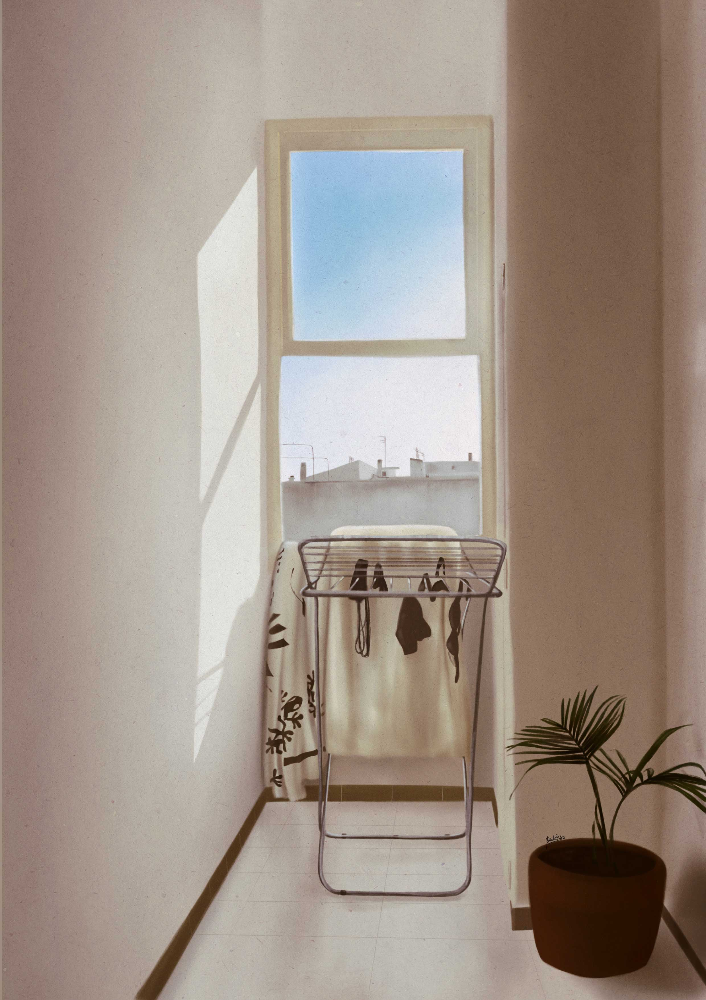
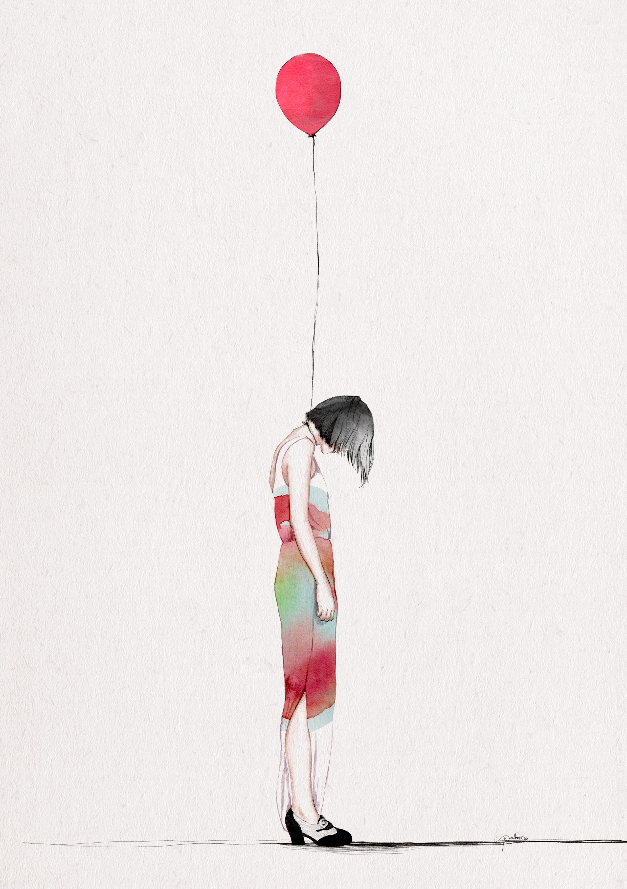

LAS LUCES Y TÚ
Las distintas luces que transcurren en el día, se asocian al tiempo y a los sentimientos pasajeros.
Ilustración realizada con técnica digital.

EMPECEMOS POR EL FINAL
Represento un sentimiento de impotencia ante una relación, que desde el principio, va a acabar mal.
Ilustración realizada con técnica digital.

REEMPLAZAR
Des-encajar piezas, sentimientos y perspectivas.
Ilustración realizada con técnica digital.

DESORDEN
Mentalmente inestable
Ilustración realizada con técnica digital.

DEJAR VOLAR
Dejar marchar para que deje de doler.
Ilustración realizada con técnica digital.